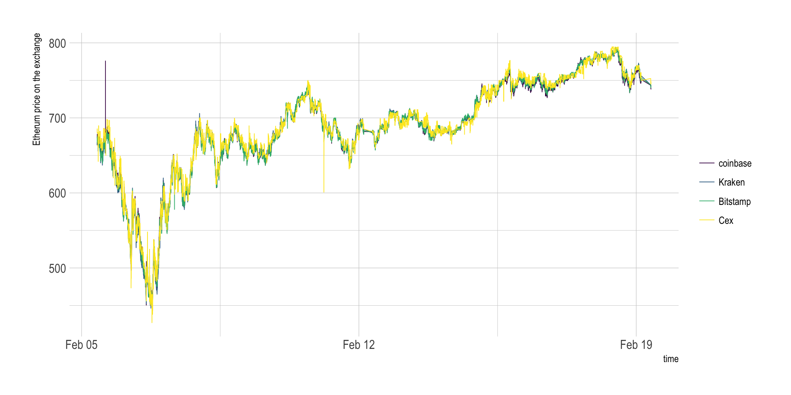
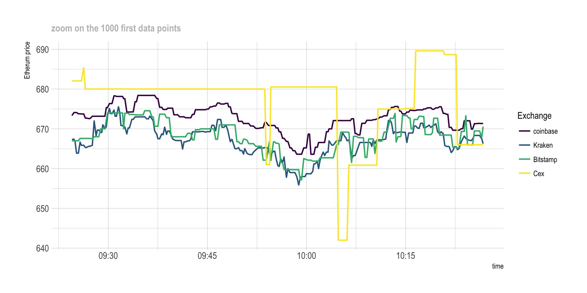
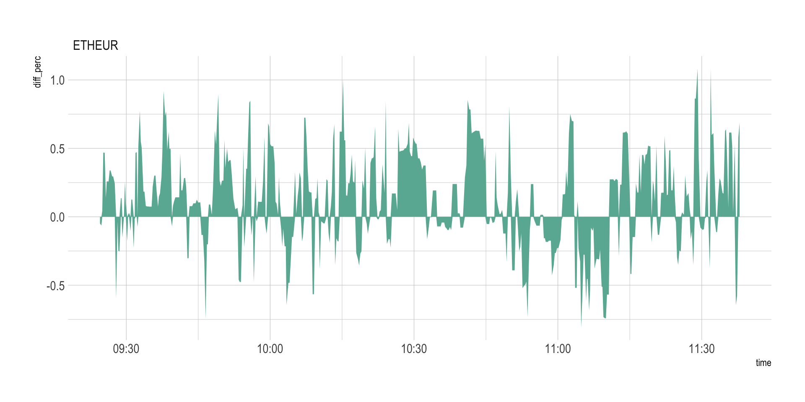

Comparing crypto prices between exchanges
Are there differences? How big? How often? on which exchange and currency?
Prices of 5 cryto currencies have been harvested for 2 weeks on 5 different exchanges every few seconds as described here. About 800,000 data points are available, allowing to compare prices between exchanges at a high resolution.
Here is an overview of the Etherum price on the period on the 5 exchanges:
# Library
library(tidyverse)
library(DT)
library(plotly)
library(hrbrthemes)
library(viridis)
library(lubridate)
# Load result
load(url("https://raw.githubusercontent.com/holtzy/Crypto-Arbitrage/master/DATA/public_ticker_harvest.Rdata"))
Ticker$last <- as.numeric(Ticker$last)
#Ticker= head(Ticker, 100000)
# Plot
p <- Ticker %>%
filter(symbol=="ETHEUR") %>%
filter(last>400) %>% # delete a weird value
ggplot( aes(x=time, y=last, color=platform, group=platform)) +
geom_line( size=0.8, size=0.4) +
scale_color_viridis(discrete=TRUE, name="Exchange") +
ylab("Etherum price") +
xlab("Day (February)") +
theme_ipsum() +
scale_x_datetime(date_breaks = "1 day", date_labels = "%d", minor_breaks=NULL) +
ggtitle("Etherum price evolution for 4 exchanges") +
theme( plot.title = element_text(size=12, color="grey"))
p
# Save the plot for talk
ggsave(p, file="IMG/etherum_evolution.png", width=7, height=4)There is a very high correlation between exchange prices. But if we zoom on the first 1,000 data points, a few discrepancies appear:
# Plot
p <- Ticker %>%
filter(symbol=="ETHEUR") %>%
filter(last>400) %>% # delete a weird value
head(1000) %>%
ggplot( aes(x=time, y=last, color=platform, group=platform)) +
geom_line( size=0.8) +
scale_color_viridis(discrete=TRUE, name="Exchange") +
ylab("Etherum price") +
theme_ipsum() +
ggtitle("zoom on the 1000 first data points") +
theme( plot.title = element_text(size=12, color="grey"))
p
# Save the plot for talk
ggsave(p, file="IMG/etherum_evolution_zoom.png", width=7, height=4)As you can see on the graphic above, there are discrepencies between prices of exchanges. Basically, the price is not exactly the same on Bitstamp and on Cex at a given timestamp. The correlation is very strong tough.
This is what interest us to perform arbitrage. But can we quantify these differences? The following graphic displays the price difference (in %) between Kraken and Bitstamp at each time stamp:
get_last_difference <- function(plat1, plat2, currency){
# First I calculate the differnce of the 'last' price between both exchanges:
diff <- Ticker %>%
filter(symbol==currency) %>%
filter(platform %in% c(plat1, plat2)) %>%
select(time, platform, last, symbol) %>%
spread(platform, last) %>%
mutate(diff=.[[4]] - .[[3]], diff_perc=(.[[4]] - .[[3]]) / .[[4]] *100 ) %>%
filter(!is.na(diff_perc))
return(diff)
}
# Then I plot the result
plot_last_difference <- function(diff, plat1, plat2){
p <- diff %>%
sample_frac(0.1) %>%
ggplot( aes(x=time, y=diff_perc, group=symbol, fill=symbol)) +
geom_area(fill="#69b3a2") +
theme_ipsum() +
theme(
legend.position="none",
plot.title = element_text(size=12, color="grey")
) +
ylab("Price difference (%)") +
xlab("Day (February)") +
ggtitle(paste0("Etherum price difference between ", plat1, " and ", plat2)) +
scale_x_datetime(date_breaks = "1 day", date_labels = "%d", minor_breaks=NULL) +
ylim(-3,3)
p
}
# Run the function for Kraken and bitstamp
diff <- get_last_difference("Kraken", "Bitstamp", "ETHEUR")
p <- plot_last_difference(diff, "Kraken", "Bitstamp")
p
ggsave(p, file="IMG/price_diff_eth_kraken_bitstamp.png", width=7, height=4)
# Compute a few summary statistics
lengthPeriod <- max(diff$time) - min(diff$time)
numTimeStamp <- nrow(diff)
numOver1 <- diff %>% filter(diff_perc > 1 ) %>% nrow()
numUnder1 <- diff %>% filter(diff_perc < -1 ) %>% nrow()
numTot <- numOver1 + numUnder1
freqOver1 <- numTot / as.numeric(lengthPeriod) %>% round(0)The chart aboves represents a period of 14 days where 42087 prices have been recovered. In total, 2293 situations with Bitstamp being at least 1% more expensive than Kraken have been observed, and 644 reciprocally. This is a total of 2937 times with differences over 1%, which is an average of 210 per day.
Important note: this chart represents the price differences of the last transaction done. However, note that we buy crypto at the ask price, and sell it at the bid price. Differences are thus smaller than that in reality.
Now that we know there are a few differences between exchanges, we need to know what pair of exchange have the most frequent discrepencies. Moreover, we need to figure out if some currencies have more discrepencies than others.
The next graphic quantifies the number of differences observed per day (Y axis) for a specific threshold (X axis). Four lines are provided, one per currency that exists in both Kraken and Bitstamp. For instance, it appears that differences over 1% happen about 2OO times a day for bitcoin, and about 300 times a day for litecoin (XRP) and Bitcoincash. It is also interesting to note that differences over ~1.7% basically never happen.
# A function that calculates the difference between the ASK and the BID of 2 platforms for every currency at each time stamp
find_askbid_difference <- function(plat1, plat2){
diff <- Ticker %>%
filter(platform %in% c(plat1, plat2)) %>%
select(time, platform, symbol, ask, bid) %>%
mutate(ask=as.numeric(ask), bid=as.numeric(bid)) %>%
gather(temp, value, -time, -platform, -symbol) %>%
mutate(platform=gsub(plat1,"plat1", platform)) %>%
mutate(platform=gsub(plat2,"plat2", platform)) %>%
unite(temp1, platform, temp, sep="_") %>%
spread( key=temp1, value=value) %>%
mutate(
diff1=(plat1_bid-plat2_ask)/plat1_bid*100,
diff2=(plat2_bid-plat1_ask)/plat2_bid*100
) %>%
rowwise() %>%
mutate( diff_perc=max(diff1, diff2) ) %>%
filter(!is.na(diff_perc))
return(diff)
}
# A function that plot these differences
plot_askbid_difference <- function(diff){
p <- diff %>%
sample_frac(0.1) %>%
ggplot(aes(x=time, y=diff_perc, group=symbol, fill=symbol)) +
geom_area() +
facet_wrap(~symbol, nrow=5) +
theme(legend.position="none") +
ggtitle("")
ggplotly(p)
}
# A function that counts the number of significant differences for several threshold
find_signif_diff <- function(diff){
nbSignifDiff=data.frame()
for( i in seq(0.7,4,0.2)){
df <- diff %>%
group_by(symbol) %>%
filter(diff_perc > i) %>%
summarise( nb_over_thres = n() ) %>%
mutate( thres = i) %>%
arrange( nb_over_thres )
nbSignifDiff <- rbind( nbSignifDiff, df)
}
return(nbSignifDiff)
}
# A function that plot this number of diff -> plot it PER DAY
plot_signif_diff <- function(nbSignifDiff){
p <- nbSignifDiff %>%
filter(symbol=="BCHEUR") %>%
mutate(nb_over_thres = nb_over_thres / time_length(lengthPeriod, unit="day")) %>%
mutate(mytext=paste0("Currency: ", gsub("EUR", "",symbol), "\n", round(nb_over_thres,0)," differences per day observed over ",thres, " %")) %>%
mutate(symbol = gsub("EUR", "", symbol)) %>%
ggplot( aes(x=thres, y=nb_over_thres, group=symbol, color=symbol, text=mytext)) +
geom_line() +
ylab("Number of differences / day") +
xlab("Difference in %") +
ggtitle("Number of price differences between Kraken and Bitstamp") +
theme_ipsum() +
theme(plot.title = element_text(size=12, color="grey")) +
scale_color_viridis(discrete=TRUE, name="Currency")
#ggplotly(p, tooltip="text")
}
# Apply that to a first example:
diff <- find_askbid_difference("Kraken", "Bitstamp")
nbSignifDiff <- find_signif_diff(diff)
p <- plot_signif_diff(nbSignifDiff)It is possible to build exactly the same graphic for each pair of exchange, giving the following graphic. Note that some currencies are not available on every exchange, that’s why most of the pair below give results only for bitcoin that is the most widely used currency.
# find all the pairs of platform
list_platforms <- Ticker$platform %>% unique() %>% as.character()
list_pairs <- combn(list_platforms, 2)
# find the number of significant differences for each pair
bilan=data.frame()
for(i in c(1:ncol(list_pairs))){
diff <- find_askbid_difference(list_pairs[1,i], list_pairs[2,i])
nbSignifDiff <- find_signif_diff(diff)
nbSignifDiff$pair <- paste( list_pairs[1,i], list_pairs[2,i], sep="-")
bilan <- rbind(bilan, nbSignifDiff)
}
# plot it
p <- bilan %>%
mutate(nb_over_thres = nb_over_thres / time_length(lengthPeriod, unit="day")) %>%
mutate(mytext=paste0("Currency: ", gsub("EUR", "",symbol), "\n", nb_over_thres," differences observed over ",thres, " %")) %>%
ggplot( aes(x=thres, y=nb_over_thres, group=symbol, color=symbol)) +
geom_line() +
ylab("Number of significant differences per day") +
xlab("Difference threshold (%)") +
theme_ipsum() +
scale_color_viridis(discrete=TRUE, name="") +
facet_wrap(~pair, ncol=5) +
theme(
panel.spacing = unit(0.3, "lines"),
strip.text.x = element_text(size = 8)
)
ggplotly(p, tooltip="text")#ggsave(p, file="IMG/difference_counts_step3.png", width=7, height=4)A few observation are of interest:
Discrepancies are very different from one pair of exchange to another:
The next step is to understand what arbitrage is in depth, and study its potential limitations.
A work by Yan Holtz for data-to-viz.com